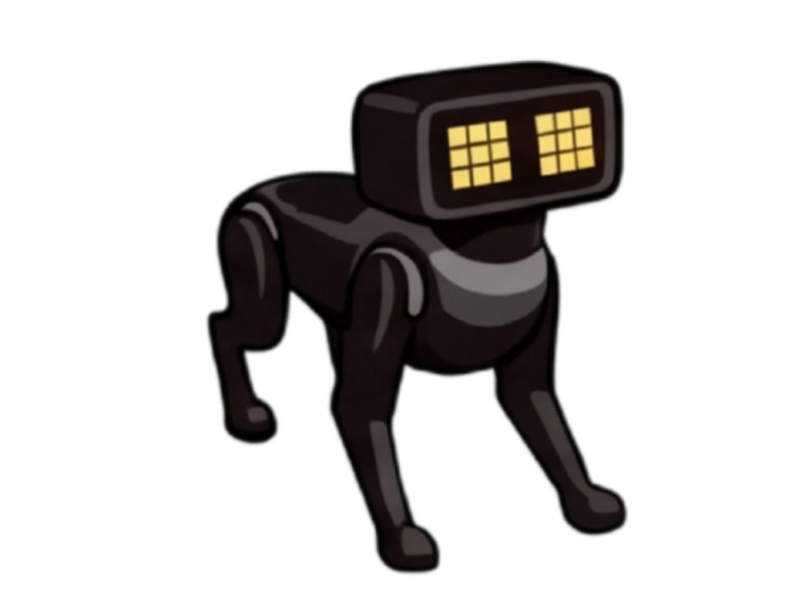

Q-Learning
Off-policy · 대담한 최적화
미래의 최대 보상 가정
멍멍! 준비 완료!

SARSA
On-policy · 신중한 안전제일
실제 탐색 위험까지 감안
조심조심 산책 준비!
보상에 따라 배우는 로보독의 격자형 강화학습 탐구실

왜 Q-Learning과 SARSA는 같은 맵에서 다른 길을 갈까요?
※ 본 시뮬레이션은 로봇개의 실제 보행이나 다리 관절 물리를 계산하는 것이 아니며, 보상 규칙에 따른 경로 선택 정책(Policy)을 학습하는 격자 강화학습 교육 도구입니다.